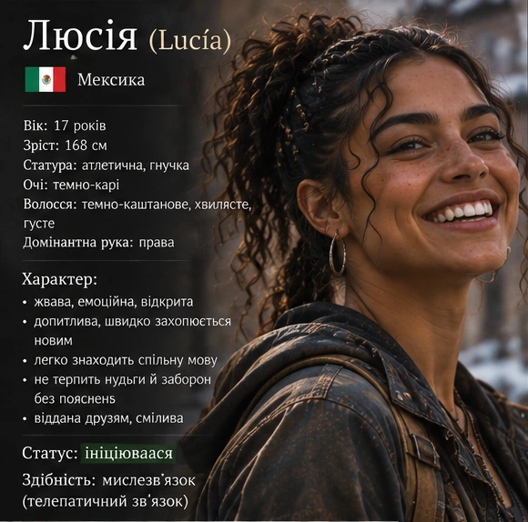

ОСНОВНА ІНФОРМАЦІЯ
Енергія, цікавість і відкритість
Люсія — одна із семи учнів Мольфара, які вирушають разом із ним та Алісією знайомитися з громадами характерників і розвивати власні здібності. Вона родом із Мексики. У спілкуванні жвава, емоційна й відкрита, легко знаходить спільну мову з людьми та швидко захоплюється новим.
Походження: Мексика
Вік: 17 років (за наданим візуальним патерном)
Зріст: 168 см (за наданим візуальним патерном)
Статура: атлетична, гнучка
Очі: темно-карі
Волосся: темно-каштанове, густе, хвилясте
Домінантна рука: права
Статус: ініційована (за наданим візуальним патерном)
Здібність: мислезв'язок
РОЛЬ І ХАРАКТЕР
Товариська й допитлива учениця
Люсія не любить нудьги й заборон без пояснень. Вона віддана друзям, смілива та легко підтримує розмову. Її допитливість проявляється в бажанні зрозуміти незнайомі місця й людей: під час подорожі вона ставить запитання, жартує та охоче ділиться враженнями.
НАВЧАННЯ
Мислезв'язок і подорожі
Під час спільного навчання Люсія разом з іншими учнями починає відчувати мислезв'язок. Вона вчиться передавати думки, образи та короткі повідомлення, а також контролювати, кому саме адресує думку й що готова приймати від інших.
У групових вправах Люсія швидко захоплюється новою можливістю та радіє першим успіхам. Вона також бере участь у подорожах до громад характерників, де знайомиться з їхніми традиціями й досвідом.
ДОВІДКОВІ ДАНІ
Підтверджені риси персонажа
Що підтверджено рукописом
- Люсія — учениця Мольфара з Мексики.
- Вона входить до групи семи учнів, які подорожують разом із Мольфаром та Алісією.
- Жвава, допитлива, товариська, охоче жартує та ділиться враженнями.
- Під час навчання розвиває мислезв'язок і вчиться керувати ним.
Що визначено наданим візуальним патерном
Вік 17 років, зріст 168 см, атлетична гнучка статура, темно-карі очі, густе хвилясте темно-каштанове волосся, права домінантна рука. Одяг практичний, із мексиканськими мотивами; серед деталей — коси з намистинами, сережки-кільця та особистий амулет.